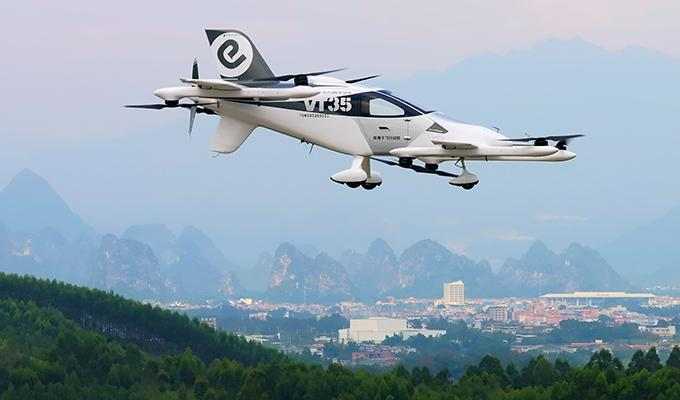
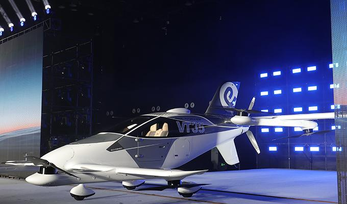

执行摘要Executive Summary
VT35 是亿航智能控股有限公司（Nasdaq: EH）于 2025 年 10 月 13 日在合肥骆岗公园全球首发的新一代长航程无人驾驶载人电动垂直起降航空器（eVTOL），基于前代 VT30 原型机升级优化，采用串列翼双座布局、8 个分布式升力螺旋桨加 1 个尾推桨的复合翼构型，面向跨城市、跨海域、跨山区等中长途交通场景[2][3]。
The VT35 is EHang's next-generation long-range pilotless passenger eVTOL, unveiled in Hefei on 13 October 2025. It is a tandem-wing, two-seat lift-and-cruise aircraft with eight lift propellers and one pusher propeller, targeted at inter-city, cross-bay and mountainous routes.
- 产品定位应当写准确：VT35 是一台面向城际与区域空中交通的复合翼载人航空器原型，而不是已经完成适航取证、可以常态化商业载客的定型产品。2025 年 3 月中国民航局已受理其型号合格证（TC）申请，目前处于适航审定阶段[2]。
- 构型取舍清晰：相对多旋翼构型，复合翼在巡航段依靠固定翼与尾推桨提供升力和推力，巡航效率与航程明显改善；代价是增加了旋翼—固定翼过渡段的控制机构、气动耦合与验证难度[1]。
- 公开参数集中在平台层面：官方披露满载航程 ≥200 km、最大航时 60 min、经济巡航速度 ≥216 km/h、有效载荷 ≥200 kg、最大起飞重量 950 kg；但高度包线、气象适应范围、冗余降级方案、电池循环寿命与维护周期等工程参数尚未系统公开[1][4]。
- 技术可行性应分三层判断：转换飞行已完成演示；长航程与复杂环境下的重复运行能力有待验证；受监管的载人商业运输尚未成立——TC、生产许可证（PC）与运营合格证（OC）均未取得。
- 市场路径是先 B/G 端示范、后网络化运营：标准版中国市场公开指导价 650 万元人民币[4]，初期更可能由地方示范项目、文旅体验与行业航线采购支撑，而非面向个人用户的城市内高频通勤。
- 对课程作业的启示：航程与速度数字越引人注目，越需要配套证据表。一次公开试飞不能替代飞行包线、冗余安全、审定路径、基础设施与全寿命成本的系统论证。
01 研究设计与证据边界01 Research Design and Evidence Boundary
本文采用“系统综述式案例评估”方法：先界定研究对象与任务场景，再按官方披露、第三方报道、标准与论文、测算判断四个层级整理来源，最后给出技术、场景与市场三个维度的可行性结论。研究对象限定为亿航 VT35 整机，时间范围为 2021 年 VT30 发布至 2026 年 11 月 25 日；同公司 216 系列仅作为适航路径与基础设施复用的参照，不作为主要分析对象。
This is a systematic-review-informed case assessment. The object is the EHang VT35; the 216 series is referenced only for certification precedent and vertiport reuse, not analyzed as the main subject.
证据分级规则
| 来源类别 | 检索与用途 | 能证明什么 |
|---|---|---|
| 企业官方 | VT35 产品页、新品发布新闻稿、公司投资者关系材料 | 证明企业提出了哪些指标、展示了哪些动作与构型 |
| 第三方报道 | 主流媒体发布会报道、行业研究文章 | 用于交叉核验价格、时间节点与场景表述 |
| 监管与标准 | 民航局适航审定公开信息、EASA SC-VTOL 等通用框架 | 解释审定程序、安全等级与合规要求 |
| 课程讲义与测算 | 飞行汽车产业分析讲义、量级估算 | 建立数量级判断，不冒充官方数据 |
02 发展路径：从 VT30 到 VT35 的构型收敛02 Development Path: From VT30 to VT35
亿航在多旋翼载人机型之外，很早就布局了面向城际交通的复合翼产品线。2021 年 5 月 26 日，公司发布长航距载人级自动驾驶飞行器 VT-30，这是其产品系列中首款专为城际间空中交通设计的机型，采用复合翼结构，设计航程 300 km、设计航时 100 min，可搭载两名乘客；同年 9 月 27 日，VT-30 在珠海航展前夕全球公开亮相[5][6]。
VT35 即基于 VT30 原型机升级优化而来：在保持复合翼思路的同时缩减整机尺寸，维持气动效率与飞行稳定性，并复用既有起降场地[2]。2025 年 3 月，中国民航局受理 VT35 无人驾驶载人航空器的 TC 申请；2025 年 10 月 13 日，VT35 在合肥骆岗公园举行全球首发，现场公开转换飞行试飞视频，同步公布标准版中国市场指导价[2][4]。

时间节点
| 时间 | 节点 | 证据性质 |
|---|---|---|
| 2021.05 | VT-30 发布，定位城际长航距复合翼机型 | 官方披露 |
| 2021.09 | VT-30 珠海航展前夕全球亮相 | 官方披露 + 现场公开 |
| 2025.03 | 民航局受理 VT35 型号合格证（TC）申请 | 官方新闻稿 |
| 2025.10 | VT35 合肥全球首发，完成转换飞行测试并公开试飞视频 | 官方发布 + 媒体报道 |
| 后续 | 适航审定、取证与商业运营节点尚未独立验证 | 未发生，不作承诺 |
从创新管理角度看，VT30 阶段回答的是“城际长航程是否需要固定翼复合构型”；VT35 阶段回答的是“该构型能否在缩小尺寸、控制地面运行风险的同时进入审定流程”。不同阶段的口头指标不能合并成一张规格表，研究时必须注明日期与证据状态。
03 产品定义：一台面向城际运输的双座复合翼航空器03 Product Definition
VT35 采用串列翼双座布局，配备 8 个分布式升力螺旋桨实现垂直起降，巡航阶段通过尾推桨与固定翼实现高效平飞；机体紧凑，最大起飞重量 950 kg，机长约 8.26 m、翼展约 8.16 m、机高约 3.09 m[1][2]。官方称其可直接复用 216 系列既有的起降场，包括公园、写字楼顶、停车场等城市内场地，以便在城市中心之间点对点衔接[2]。

主要公开参数
| 参数 | 公开口径 | 证据状态 |
|---|---|---|
| 乘员 | 2 名，串列双座 | 官方披露 |
| 机长 / 翼展 / 机高 | 8.26 m / 8.16 m / 3.09 m | 官方产品页 |
| 最大起飞重量 | 950 kg | 发布新闻稿 |
| 有效载荷 | ≥200 kg | 官方产品页 |
| 经济巡航速度 | ≥216 km/h | 官方产品页 |
| 满载航程 | ≥200 km | 官方产品页 |
| 最大航时 | 60 min | 官方产品页 |
| 推进布局 | 8 升力螺旋桨 + 1 尾推桨 + 固定串列翼 | 官方产品页 |
| 指导价（中国标准版） | 650 万元人民币 | 发布会公开报道 |
VT35 与 VT30 的定位差别
| 维度 | VT30（前代原型） | VT35（当前研究对象） |
|---|---|---|
| 公开时间 | 2021 年 | 2025 年 |
| 构型 | 复合翼结构，升力与推力混合平衡 | 串列翼 + 8 升力桨 + 1 尾推桨的复合翼 |
| 乘员 | 2 名 | 2 名 |
| 航程 / 航时口径 | 设计航程 300 km，设计航时 100 min | 满载航程 ≥200 km，航时 60 min |
| 审定状态 | 原型测试阶段 | TC 申请已受理，审定进行中 |
需要强调：VT35 从定义上就是航空器，不带地面行驶机构，不应归入“陆空两栖汽车”类别；其设计中心是垂直起降、航线飞行与载人运输，而不是道路行驶。
04 系统架构与关键技术04 Architecture and Key Technologies
依据公开材料，VT35 的系统可归纳为机体平台、能源与推进、感知与控制三大块，外加场站与监管等外部约束。下图为根据公开信息重构的架构示意，未公开的控制拓扑、冗余通道数量与安全机制不在此图中臆测。
机体平台 Airframe
- 串列翼固定翼结构
- 双座座舱与气动外形
- 起落架与地面支撑
- 轻量化复合材料结构
能源与推进 Energy / Propulsion
- 分布式电推进：8 升力桨 + 1 尾推桨
- 动力电池与电能管理
- 旋翼—机翼过渡动力协调
- 电机、电调与螺旋桨匹配
感知与控制 Control / Sensing
- 飞控系统与预设航线飞行
- 多源感知融合与探测避让
- 集群管理与多机协同调度
- 远程监管与运行后台

4.1 复合翼构型：巡航效率与过渡控制的权衡
复合翼（升力 + 推进分离）构型把垂直起降阶段的升力旋翼与巡航阶段的固定翼、尾推桨分开布置：起降阶段升力桨提供垂直推力，平飞阶段机翼提供升力、尾推桨提供推力。相比全倾转旋翼，其机构相对简单、巡航段气动效率高于纯多旋翼；相比纯固定翼，它不需要长跑道。难点在于两个阶段之间的过渡：旋翼停转或减速、机翼承力、姿态转换与推力重新分配，都需要在控制律上保证连续平稳，并验证失效情形下的安全降级。
4.2 自动飞行、感知避让与集群调度
官方材料称 VT35 搭载飞控系统实现全自动飞行，依托导航系统完成点对点飞行；多源感知融合支撑精准起降与实时避障，并配合远程监管全程守护飞行安全；集群管理技术支持多机协同，以提升运营效率、优化成本[1]。这些能力在载人航空器上必须接受适航级验证：传感器交叉校验、执行器冗余、故障检测与重构、通信链路可靠性等，目前公开材料尚未给出定量证据。
4.3 能源与航程边界
公开口径为满载航程 ≥200 km、航时 60 min、有效载荷 ≥200 kg。电动飞行器的航程与电池能量密度、起飞重量、气动阻力、巡航速度和余油（余电）裕度直接耦合；在电池能量密度没有进一步突破之前，航程指标对载荷、高度与气象条件较为敏感。公开材料未披露电池类型、容量、循环寿命、充电时间与低温性能，因此本文不对续航裕度作额外推算。
05 飞行包线与能力边界05 Flight Envelope and Capability Boundary
参照课程案例的分层方法，把 VT35 的能力从“短时演示”到“受监管运输”分为四级，分别对照公开证据判定。分级目的是避免把一次试飞外推成完整的交通工具能力。
| 能力层级 | 定义 | 截至 2026-11 的公开证据 | 判定 |
|---|---|---|---|
| L1 垂直起降与悬停 | 完成离地、悬停与起落动作 | 升力旋翼构型已公开；转换飞行测试已完成，试飞视频公开 | 已演示 |
| L2 航线飞行与避让 | 沿预设航线自动飞行，具备探测避让与远程监管 | 官方功能描述；缺少第三方独立飞行数据与扰动试验披露 | 待验证 |
| L3 持续任务包线 | 可重复的航程、高度、气象与载荷包线，含降级方案 | 高度、风况、温度、载荷—航程关系与故障降级包线未系统披露 | 未证明 |
| L4 载人商业运输 | 在受监管空域内完成载客运营 | TC 申请已受理；PC、OC 未取得，无商业载客许可证据 | 不成立 |
5.1 “能飞”不等于“能作为交通工具飞”
飞行汽车至少要同时回答四个问题：能否安全产生持续升力；能否在可控航迹上完成运输任务；能否在预期环境与气象条件下重复运行；能否获得航空监管体系的合法身份。转换飞行演示只能证明过渡段在特定条件下走通，尚不足以证明运输效率、乘员生存性、维护体系与运行经济性。
5.2 演示参数、产品参数与安全参数
- 演示参数：离地高度、悬停时间、姿态变化、着陆误差、场地隔离距离、整机重量——目前公开信息仅覆盖其中一部分。
- 产品参数：最大速度、航程、座位数、充电时间、维护周期、电池寿命、环境适用温度——多数未完整披露。
- 安全参数：单体失效后的剩余控制能力、故障检测时间、应急处置策略、乘员伤害指标、地面第三方风险——属于适航审定核心内容，需以审查证据为准。
06 安全、预期功能安全与适航06 Safety, SOTIF and Airworthiness
载人 eVTOL 的安全要求远高于地面交通工具：航空侧关注失效概率、冗余架构、持续适航与运行控制；地面电动车辆积累的三电与制造经验可以借鉴，但必须按航空适航体系进行系统级重构[13]。功能安全（电气电子系统失效导致的危害）、预期功能安全（无硬件故障时由性能不足、环境感知局限或合理误用带来的风险）与网络信息安全，需要在概念阶段就进入架构设计，而不是开发末端追加测试。
6.1 亿航已有的适航参照路径
同公司 216 系列载人机型的审定进程，为 VT35 提供了可参照的国内样本：2023 年 10 月取得型号合格证（TC），2023 年 12 月取得标准适航证（AC），2024 年取得生产许可证（PC），2025 年 3 月运营航司取得载人类民用无人驾驶航空器运营合格证（OC）[7]。需要说明的是，先例可以缩短流程学习曲线，但不等于 VT35 自动继承证件；复合翼构型的过渡段风险、结构与动力验证项目，仍需单独通过审查。
6.2 风险域与必须验证的证据
| 风险域 | 可能危害 | 必须验证的证据 |
|---|---|---|
| 结构与动力 | 旋翼失效、结构损伤、动力不对称导致姿态失控 | 冗余设计、故障树、失效注入、部件耐久与振动试验 |
| 飞控与链路 | 航迹偏差、感知漏检、通信中断、非预期动作 | 传感器交叉校验、链路冗余、控制降级策略、远程接管程序 |
| 乘员与地面人员 | 乘员伤害、地面第三方冲击、噪声与下洗气流影响 | 约束系统、应急撤离、场地隔离、噪声与社区暴露评估 |
| 监管身份 | 运行空域、航线资质、运营人资质不明确 | TC/PC/OC 取证进度、运行规则、机组与运维人员资质管理 |
6.3 标准框架参照
国际上，欧洲航空安全局的 SC-VTOL 为垂直起降航空器提出专用条件，美国联邦航空管理局通过动力升力（powered-lift）规则整合相关认证与运行要求；国内则依据 CCAR-21 部框架，以专用条件方式推进无人驾驶载人航空器审定[7][13]。VT35 作为无人驾驶载人复合翼机型，其审定既要回答飞行器本体的安全性，也要回答远程监管、运行场景与地面风险的接受边界。
07 应用场景：技术适配、监管难度与支付意愿07 Application Scenarios
场景评估分别考察技术适配（载荷、航程、起降与维护）、监管难度（进入公共运行所需证据多少）与支付意愿。下表为定性判断，不表示精确概率。
| 场景 | 技术适配 | 监管难度 | 支付意愿 | 综合判断 |
|---|---|---|---|---|
| 城际点对点通勤 | 高（≥200 km 航程匹配城市群） | 中高 | 中高 | 中期试点方向 |
| 文旅观光与体验 | 高（固定航线、低空低速） | 中 | 高 | 近期较易落地 |
| 海岛 / 海湾跨海域交通 | 较高 | 中 | 中高 | 情境依赖，看航线与客流 |
| 山区 / 复杂地形联络 | 较高（替代曲折山路） | 中 | 中 | 情境依赖 |
| 应急医疗与救援 | 中（双座、航程有限） | 高 | 高 | 现阶段暂不适配 |
| 物流货运 | 低（载人双座构型） | 高 | 中 | 不适配 |
| 城市内高频通勤 | 中（航程过剩，起降密度不足） | 极高 | 中 | 远期方向 |
官方给出的优先区域是长三角、珠三角、京津冀等核心城市群，以及湾区、群岛地区，目标是打造“空中交通一小时”生活圈，实现城市中心到城市中心的点对点衔接[2]。这类跨城场景对航程要求高于对起降密度的要求，与 VT35 的复合翼定位较为吻合；但场景成立还取决于航路规划、起降场布局、气象窗口、保险责任与票价水平。
应急与物流场景常被用来论证飞行汽车的社会价值，但应急任务需要全天候响应、明确航路、医疗载荷与可靠维护；货运需要单位载荷成本。双座载人的 VT35 在这两类任务上并不占优，不宜用示范飞行替代场景论证。
08 市场可行性：示范采购先行，网络化运营在后08 Market Feasibility
8.1 行业背景
低空经济被列为战略性新兴产业。据中国民航局预测，2025 年中国低空经济市场规模约 1.5 万亿元，2035 年有望突破 3.5 万亿元[8][9]；截至 2025 年 11 月，国内 eVTOL 年度订单总额已超过 300 亿元[8]。需要注意，低空经济总量包含无人机、通用航空、基础设施与运营服务等多个板块，不能把整体规模直接折算成某一款机型的销量。
8.2 产品与成本定位
VT35 标准版中国市场公开指导价 650 万元人民币[4]。这一价格水平决定了初期买家更可能是地方示范项目、专业运营商与行业客户，而不是个人消费者。参照产业演进的一般规律，主机厂阶段以生产销售为主，依托政府示范项目验证产品；专业运营商主导空中交通、应急与文旅等服务；远期才走向“基础设施 + 运输装备 + 全链条服务”的生态化运营[13]。
8.3 市场成立的前提条件
- 取证与运营资质：完成 TC、PC 与运营端 OC 审定，具备持续安全运行能力。
- 基础设施复用：依托既有起降场、充电平台与指挥调度系统，降低场站建设成本；VT35 设计上兼容既有 216 系列起降点[2]。
- 成本下降路径：随量产规模、电池供应链与维护体系成熟，单机购置与单位座公里成本逐步下降。
- 社会接受度：噪声、下洗气流、视觉景观与地面安全距离是社区接受度的关键变量，需要长期运行数据支撑。
- 责任与保险：明确制造商、运营商、软件与地面保障各方责任，建立最低强制责任保险等风险保障机制。
09 竞品比较09 Comparison
下表选取国内外处于不同构型与审定阶段的载人 eVTOL 作为对照。航程与速度均为各企业公开口径，审定状态截至 2026 年 11 月；不同机构的测试条件不一，不宜直接横向排名。
| 机型 | 厂商 / 国别 | 构型 | 座位 | 航程口径 | 速度口径 | 审定状态 |
|---|---|---|---|---|---|---|
| VT35 | 亿航智能 / 中国 | 复合翼（升力桨 + 尾推桨 + 固定翼） | 2 | ≥200 km（满载） | ≥216 km/h | TC 受理，审定中 |
| VT30 | 亿航智能 / 中国 | 复合翼 | 2 | 设计 300 km | — | 原型测试阶段 |
| Joby S4 | Joby Aviation / 美国 | 六旋翼倾转 | 1 飞行员 + 4 乘客 | 企业公开航程口径约百英里级 | 最高约 322 km/h（200 mph） | FAA 审定推进中[10] |
| V2000EM | 峰飞航空 / 中国 | 复合翼 | 5 | — | — | 载人型号 TC 受理中 |
| AE200 | 沃飞长空 / 中国 | 倾转旋翼 | 6 | — | — | TC / PC 双轨推进 |
从路线分工看：复合翼方案机构相对成熟、巡航效率较好，但过渡段控制需要专门验证；全倾转旋翼巡航效率潜力更高，但机构、气动与审定难度更大；多旋翼方案结构简单、悬停可靠，但航程与速度受限[11]。VT35 选择复合翼路线，对应的是 200 km 级城际场景，而不是追求最大载客量或最高速度。
行业侧也有反面参照：部分欧洲企业因技术路线投入巨大、认证周期漫长而陷入经营困境[11]。这说明构型选择、资金续航与审定节奏必须同时成立，单一性能优势不足以支撑商业成功。
10 工程化路线：三阶段推进10 Engineering Roadmap
结合课程讲义中“封闭场景验证—开放空域示范—城市立体交通”的三阶段逻辑[13]，VT35 的工程化推进可梳理为以下阶段：
| 阶段 | 主要任务 | 关键标志 |
|---|---|---|
| 近期：封闭与示范验证 | 扩展转换飞行与包线试飞，配合 TC 审定；完成冗余、故障注入与环境适应性验证；在城市群试点固定航线 | 取得 TC；完成验证试飞矩阵 |
| 中期：开放空域示范 | 取得 PC 与运营端 OC；复用既有起降场与充电平台；B 端航线常态化试运营；积累噪声、可靠性与维护数据 | 小批量交付；试点航线持续运行 |
| 远期：城市立体交通 | 纳入区域低空交通管理网络；多机型协同、空地枢纽接驳；随量产与供应链成熟降低座公里成本 | 网络化商业运营；成本与保险体系成型 |
仍需突破的关键环节
- 能源：提升电池能量密度与循环寿命，改善载荷—航程—余电裕度。
- 飞控与航电：航空级冗余架构、感知避让与复杂气象下的控制可靠性。
- 适航验证：风洞、结构、动力、系统级仿真与外场试飞的证据闭环。
- 基础设施：起降场标准、补能设施、通信导航监视与低空调度平台。
11 课程延伸11 Teaching Notes
- 证据先于结论：研究一款新型飞行器时，先列证据表（官方披露 / 第三方核验 / 标准论文 / 测算），再谈性能与市场；演示动作、设计指标与取证状态必须分开写。
- 构型决定边界：多旋翼、复合翼、全倾转旋翼各有航程、速度、机构复杂度与审定难度的取舍，没有通用最优构型，只有场景匹配问题。
- 技术同源不等于体系等价：汽车三电与无人机飞控经验可以迁移，但载人航空的可靠性、冗余与验证标准必须重建[13]。
- 市场要看全链条：除了飞行器本身，还要跟踪起降场、补能、空管、运维、保险与公众接受度；单机参数不能替代全寿命成本分析。
- 后续应持续跟踪：VT35 的 TC 审查进展、试飞包线公开程度、首批交付与试点航线、实际运营数据，是判断其可行性升级或下调的关键节点。
参考文献References
- 亿航智能. VT35 无人驾驶载人航空器官方产品页. https://www.ehang.com/cn/vt35/
- 亿航智能. 亿航智能发布新一代长航程无人驾驶载人航空器 VT35，重塑先进空中交通生态（2025-10-13）. https://www.ehang.com/news/1290.html
- EHang. Global Debut: EHang Introduces VT35, a Next-Generation Long-Range Pilotless Passenger eVTOL. https://www.ehang.com/news/1291.html
- 澎湃新闻. 全球首发，就在合肥！（2025-10-14）. https://m.thepaper.cn/newsDetail_forward_31779761
- 亿航智能. 亿航智能发布长航距自动驾驶飞行器 VT-30（2021-05-26）. https://www.ehang.com/cn/news/771.html
- EHang Investor Relations. EHang Long-Range VT-30 AAV Makes Global Debut Before Zhuhai Airshow（2021-09-27）. https://ir.ehang.com/news-releases/
- 亿航智能. EH216-S 适航审定历程. https://www.ehang.com/cn/ehang216s/airworthiness
- 新华网. 逐空而上！低空经济加速启航万亿新赛道（2025-12-23）. http://www2.xinhuanet.com/tech/20251223/75bf26ab225448b0a5d4bf540bae9c2e/c.html
- 人民日报. 低空经济展翅高飞（深度观察）（2026-03-18）. http://finance.people.com.cn/n1/2026/0318/c1004-40683744.html
- Joby Aviation. Joby Aircraft Specifications — Technology. https://www.jobyaviation.com/technology
- 36 氪. 产品未见，营销先行：eVTOL 这一波是“先吹为敬”还是“风真来了”？（2025-11-19）. https://m.36kr.com/p/3559724371532166
- 课程参考案例. The Flying Tesla Roadster — 技术、场景与市场可行性. https://lab.autozyx.com/fundamentals-of-flying-vehicle-technology/tesla-flying-roadster/
- 课程讲义. 第五章 飞行汽车产业分析及支撑技术（飞行汽车发展报告 2.0 相关内容，课程内部材料）.